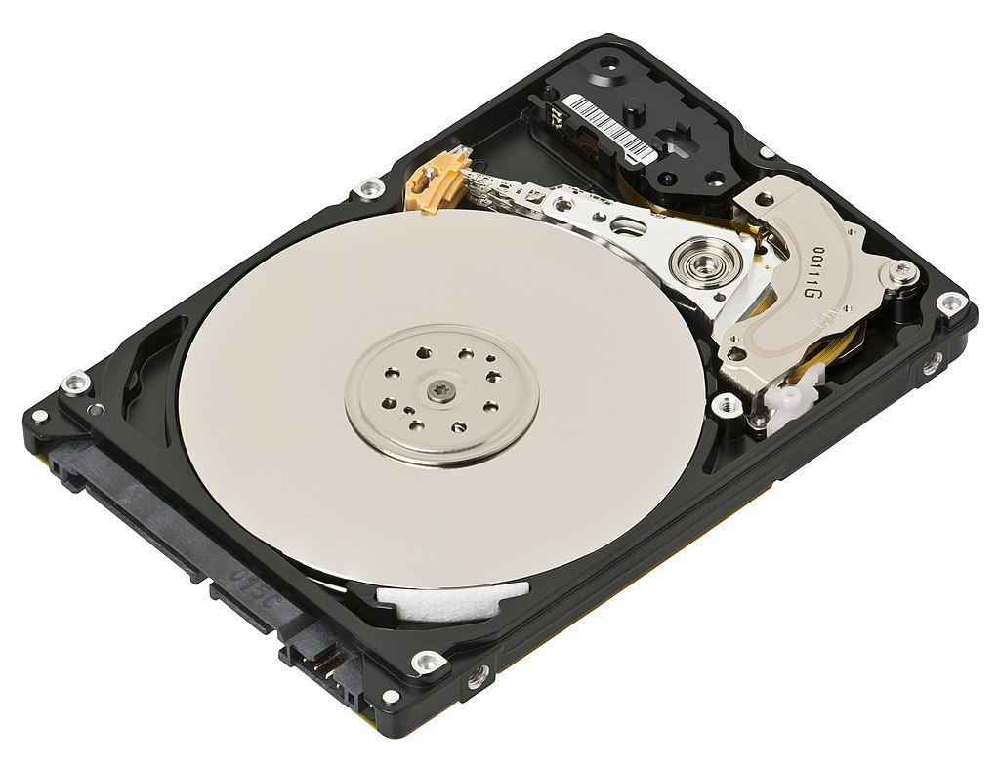

|  | Hard Disk Drives, hard disk, hard drive, or fixed disk is an electro-mechanical data storage device that stores and retrieves digital data using magnetic storage with one or more rigid rapidly rotating platters coated with magnetic material. The platters are paired with magnetic heads, usually arranged on a moving actuator arm, which read and write data to the platter surfaces. Data is accessed in a random-access manner, meaning that individual blocks of data can be stored and retrieved in any order. HDDs are a type of non-volatile storage, retaining stored data when powered off. Modern HDDs are typically in the form of a small rectangular box. |